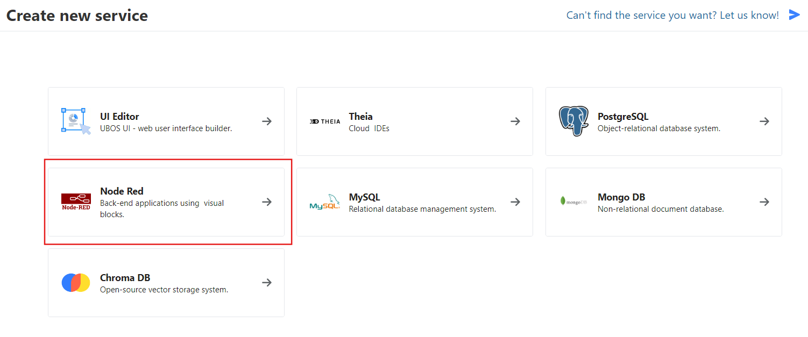
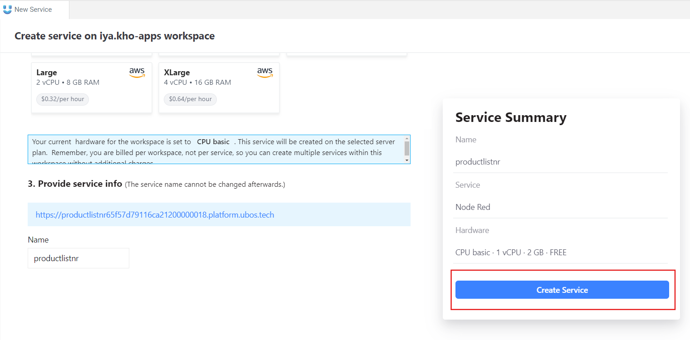
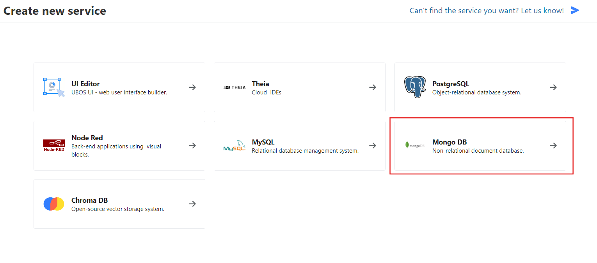
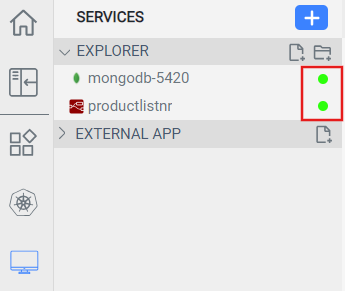

Set up your environment
Let's start by setting up our Ubos workspace for a REST API app.
Before you begin, log in to your Ubos account and open a workspace.
To build the REST API, we will use two services, Node-RED and Mongo DB.
-
Start by clicking on the blue plus or Create Service button in the left
sidebar of your workspace.

-
Choose Node-RED.

-
Set up your Node-RED environment's properties and click Create Service.
You will then be directed to the service creation tab.

-
Go back to the New Service tab and select Mongo DB.

-
Configure your database's properties and then click Create Service. Once
your services are ready, you'll see green circles next to their names on the
left sidebar. This process may take a few minutes.

-
Your API's base URL will be the same as the Node-RED service link. To copy the
link, hover over the service's name on the sidebar and click Link to the
service.

You are now ready to start working on your application.
Let's configure the workspace for a sample online store API.